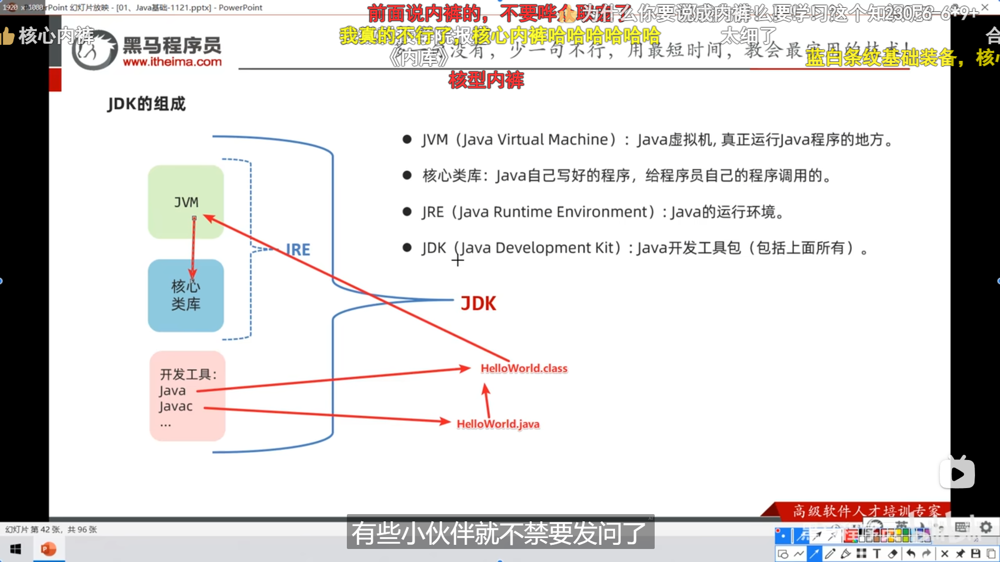

配置了 IntelliJ IDEA 和 Java 21.0环境，运行了经典“Hello World“，复习了一遍
安装 IntelliJ IDEA
**下载 IntelliJ IDEA**：
- 从 JetBrains 的官方网站下载最新版本的 IntelliJ IDEA 专业版。
**安装**：
- 傻瓜式安装，最后激活一手。
安装 Java Development Kit (JDK)
- **下载 JDK**：
- 从 Oracle 官网下载长期支持的JDK 版本。
- **安装 JDK**：
- 运行下载的安装包并按照指示完成安装。
- **配置环境变量**：新版自动配好了，老版或者说有多个要切换的版本就改
JAVA_HOME路径。
- **Windows**：在系统属性的“高级”选项卡中，点击“环境变量”按钮，然后添加或编辑
JAVA_HOME 变量，设置其值为 JDK 的安装路径。同时，确保 `PATH` 变量中包含 %JAVA_HOME%\bin 。配置 IntelliJ IDEA 使用 JDK
- **启动 IntelliJ IDEA**：
- 打开 IntelliJ IDEA。
- **创建或导入项目**：
- 如果是新项目，选择“Create New Project”。如果是现有项目，选择“Open”。
- **配置 JDK**：
- 在创建新项目时，IDEA 会要求你选择一个 JDK。选择已有的 JDK 版本或直接下载。
- 对于现有项目，可以在项目结构中配置 JDK。通过
File > Project Structure > Project来访问项目设置，然后选择正确的 Project SDK。
- 装插件。
project->module->package->class

开始编码
- **创建一个 Java 类**：
- 在项目视图中，右键点击
src 文件夹，选择 New > Java Class ，然后输入类名。- **编写代码**：
- “Hello, World!” 程序：
```java
public class HelloWorld {
public static void main(String[] args) {
System.out.println("Hello, World!");
}
}
```
- **运行程序**：
- 右键点击包含
main 方法的 Java 类，选择 Run 'HelloWorld.main()' （这里的 HelloWorld 是类名）。
提示
- psvm、sout快速输入很方便，注释也是ctrl+/，双斜杠//，/* , /***/, */
- 快捷键，ctrl+D没用，Alt+↑/↓就可以移动了，Alt+Shift+↑/↓是复制一段代码，Ctrl+F搜索

数据类型
- 跟C++差不多，没什么特别的，速过当复习
- 标识符要求和进制转换，还有数据内存中表示，二进制0b 八进制0 十六进制0x
- 逻辑运算符一样自增自减什么的都一样。


- 自动类型转换，小的自动转为大的，表达式里面
byte，char，short自动转为int


- 强制类型转换，可能会数据丢失 按
Alt+Enter

输出 API:Scanner
- Java API 中文文档
https://cunzaima.cn/ - 步骤如图 第一步自动导了不用管

- 使用如图

- 不完全总结


流程控制
- 典，速过


switch注意事项

- 记得写
break

- 穿透性用法简化代码，用
if也不错

for循环 （知道循环次数）

while循环（条件）

do-while循环（先do一次再判断条件）

- 三种区别

- 死循环

- 关键字
break和continue


Random(), 生成1~10，0~9 + 1，生成3~17，0~14 + 3


Ctrl+Alt+t可以快速选择语句
数组
- 声明语法


- 可以像C一样写 但up推荐不要（bushi
- 但动态的不能照搬C语言
int a[100]

- 遍历数组 直接数组名.fori + 数组名.sout 秒了

- 默认初始值


- 数组声明总结

- 数组内存执行原理


- 只需要注意 System.out.println(arr) 存的不是首位44 而是数组对象的地址